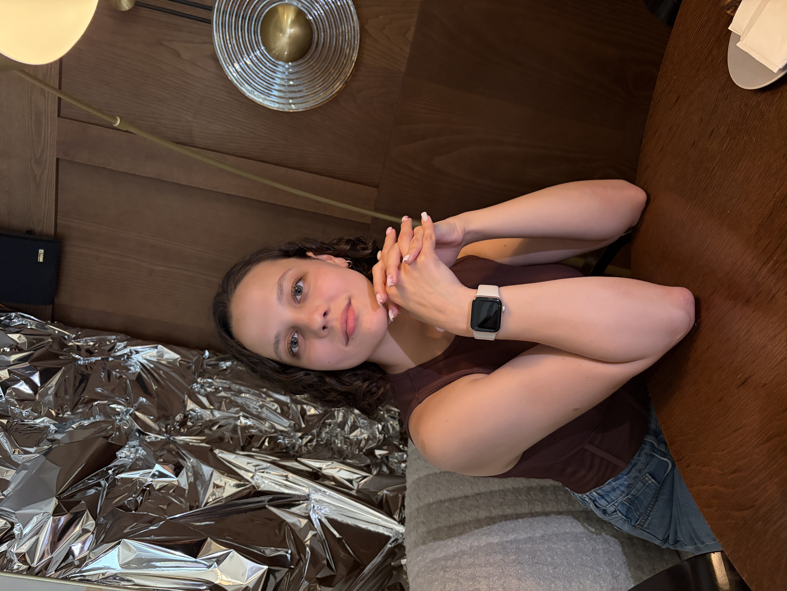

Привет, я Жанна — начинающий дизайнер и веб-разработчик. Помогаю брендам и стартапам обрести стиль, код и визуальную идентичность.
Меня зовут Жанна, я живу и работаю в Москве. Более 2х лет я объединяю эстетику и технологии: проектирую интерфейсы, верстаю, рисую айдентику и иллюстрации.
В работе использую Figma, Pixso, Inkscape, Photoshop, Illustrator, а также HTML, CSS, JavaScript. Люблю минимализм и продуманные детали.
